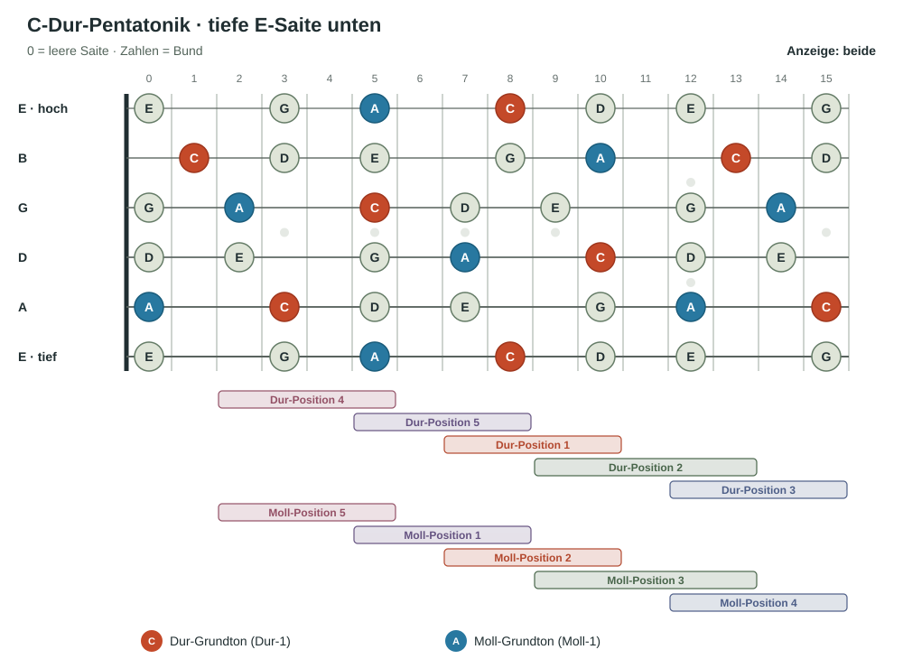
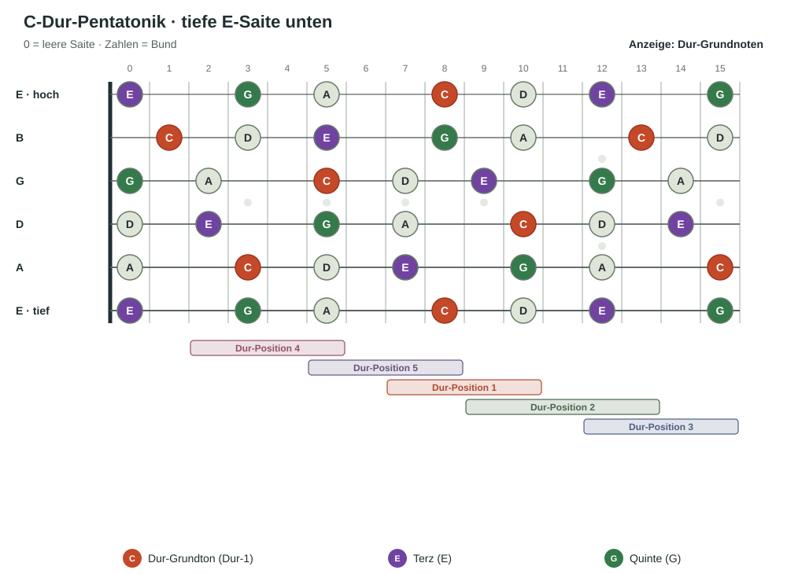

Die Grundlage
Was ist eine Pentatonik?
Eine Pentatonik ist eine Tonleiter mit fünf verschiedenen Tönen pro Oktave. Die Dur-Pentatonik enthält die Stufen 1, 2, 3, 5 und 6 der Dur-Tonleiter. Die Moll-Pentatonik enthält 1, ♭3, 4, 5 und ♭7 der Moll-Tonleiter.
Auf der Gitarre begegnen dir diese Töne in fünf über das Griffbrett verteilten Positionen. Dieselben fünf Formen lassen sich aus einem Dur- oder Moll-Blickwinkel betrachten.
Zwei Perspektiven auf dieselben Töne
Zu jeder Dur-Pentatonik gehört eine parallele Moll-Pentatonik.
Die parallele Moll-Pentatonik verwendet genau dieselben Töne wie die Dur-Pentatonik. Der Unterschied ist, welcher Ton sich wie der Ruhe- und Grundton anfühlt: In Dur ist es die Dur-1, in Moll die Moll-1.
Die parallele Moll-Tonart liegt eine kleine Terz unter der Dur-Tonart. Umgekehrt liegt die parallele Dur-Tonart eine kleine Terz über der Moll-Tonart.
Beispiel: C-Dur und A-Moll
C-Dur-Pentatonik: C · D · E · G · A
A-Moll-Pentatonik: A · C · D · E · G
Beide Tonleitern enthalten dieselben fünf Töne. Je nachdem, ob C oder A als Grundton gehört wird, klingt und funktioniert das Material als Dur oder Moll.
Unsere Zählweise
Die 1 bestimmt die Positionsnummerierung.
Wenn du ein Lied in Dur spielst oder in Dur denkst, suchst du die Dur-Grundnote auf der tiefen E-Saite. Die Position mit dieser Dur-1 heißt Dur-Position 1. Die nächste Position rechts in Richtung höherer Bünde heißt 2, dann folgen 3, 4 und 5.
In Moll gehst du genauso vor: Du suchst die Moll-Grundnote auf der tiefen E-Saite. Die Position mit dieser Moll-1 heißt Moll-Position 1. Die Position rechts daneben ist 2 und so weiter.
Wichtig: Die Positionsnummer hängt davon ab, ob du gerade in Dur oder Moll denkst. Dieselbe Griffbrettlage kann daher eine andere Nummer tragen.
So hängen die Nummern zusammen
Dur-1 ist Moll-2. Moll-1 ist Dur-5.
Bei den parallelen Dur- und Moll-Pentatoniken verschieben sich die Namen der fünf Positionen zyklisch:
| Dur-Bezug | Moll-Bezug |
|---|---|
| Dur-Position 1 | Moll-Position 2 |
| Dur-Position 2 | Moll-Position 3 |
| Dur-Position 3 | Moll-Position 4 |
| Dur-Position 4 | Moll-Position 5 |
| Dur-Position 5 | Moll-Position 1 |
Also: Die Moll-1 liegt in unserer Zählweise in der fünften Dur-Position. Die Dur-1 liegt in der zweiten Moll-Position. Finde zuerst den Grundton auf der tiefen E-Saite und entscheide dann, ob du Dur oder Moll als Bezug nimmst.
Die fünf Positionen auf dem ganzen Griffbrett
Hier siehst du die C-Dur-Pentatonik bis zum fünfzehnten Bund. Die roten C-Töne markieren den Dur-Grundton C; die blauen A-Töne markieren den parallelen Moll-Grundton A. Die Leisten zeigen die fünf Dur-Positionen und darunter die fünf Moll-Positionen. Moll-Position 1 beginnt beim A auf der tiefen E-Saite; sie entspricht Dur-Position 5. Benachbarte Positionen überlappen sich.

Weitere Lektion
Der Grundakkord in der Pentatonik
Hier siehst du dieselben fünf C-Dur-Pentatonik-Positionen auf dem ganzen Griffbrett. Die Dur-Grundtöne C sind rot markiert, die Terz E violett und die Quinte G grün. Wir zeigen hier einige der gängigsten Akkordgriffe. Es gibt aber noch viele weitere Griffkombinationen, mit denen sich dieselben Akkorde spielen lassen. Mit „Dur-Grundakkord anzeigen“ werden zwei Akkordprototypen markiert: die E-Dur-Form als Barreakkord in Position 1 ab Bund 8 und die D-Form zwischen Position 2 und 3. Ihr Dreieck liegt auf G-Saite Bund 12, B-Saite Bund 13 und hoher E-Saite Bund 12. Die nächste Form verbindet A-Saite Bund 15, D-Saite Bund 14 und G-Saite Bund 12. Die A-Form verbindet A3, D5, G5 und B5. Die offene C-Form verbindet A3, D2, G0, B1 und e0.
